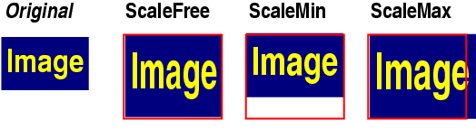

QSize Class Reference
The QSize class defines the size of a two-dimensional object.
More...
#include <qsize.h>
List of all member functions.
Public Members
Related Functions
- bool operator== ( const QSize & s1, const QSize & s2 )
- bool operator!= ( const QSize & s1, const QSize & s2 )
- const QSize operator+ ( const QSize & s1, const QSize & s2 )
- const QSize operator- ( const QSize & s1, const QSize & s2 )
- const QSize operator* ( const QSize & s, int c )
- const QSize operator* ( int c, const QSize & s )
- const QSize operator* ( const QSize & s, double c )
- const QSize operator* ( double c, const QSize & s )
- const QSize operator/ ( const QSize & s, int c )
- const QSize operator/ ( const QSize & s, double c )
- QDataStream & operator<< ( QDataStream & s, const QSize & sz )
- QDataStream & operator>> ( QDataStream & s, QSize & sz )
Detailed Description
The QSize class defines the size of a two-dimensional object.
A size is specified by a width and a height.
The coordinate type is QCOORD (defined in <qwindowdefs.h> as int).
The minimum value of QCOORD is QCOORD_MIN (-2147483648) and the maximum
value is QCOORD_MAX (2147483647).
The size can be set in the constructor and changed with setWidth()
and setHeight(), or using operator+=(), operator-=(), operator*=()
and operator/=(), etc. You can swap the width and height with
transpose(). You can get a size which holds the maximum height and
width of two sizes using expandedTo(), and the minimum height and
width of two sizes using boundedTo().
See also QPoint, QRect, Graphics Classes, and Image Processing Classes.
Member Type Documentation
QSize::ScaleMode
This enum type defines the different ways of scaling a size.

- QSize::ScaleFree - The size is scaled freely. The ratio is not preserved.
- QSize::ScaleMin - The size is scaled to a rectangle as large as possible
inside a given rectangle, preserving the aspect ratio.
- QSize::ScaleMax - The size is scaled to a rectangle as small as possible
outside a given rectangle, preserving the aspect ratio.
See also QSize::scale(), QImage::scale(), and QImage::smoothScale().
Member Function Documentation
QSize::QSize ()
Constructs a size with invalid (negative) width and height.
QSize::QSize ( int w, int h )
Constructs a size with width w and height h.
QSize QSize::boundedTo ( const QSize & otherSize ) const
Returns a size with the minimum width and height of this size and
otherSize.
QSize QSize::expandedTo ( const QSize & otherSize ) const
Returns a size with the maximum width and height of this size and
otherSize.
Examples: customlayout/card.cpp and customlayout/flow.cpp.
int QSize::height () const
Returns the height.
See also width().
Examples: movies/main.cpp, qfd/fontdisplayer.cpp, and qfd/qfd.cpp.
bool QSize::isEmpty () const
Returns TRUE if the width is less than or equal to 0, or the height is
less than or equal to 0; otherwise returns FALSE.
bool QSize::isNull () const
Returns TRUE if the width is 0 and the height is 0; otherwise
returns FALSE.
bool QSize::isValid () const
Returns TRUE if the width is equal to or greater than 0 and the height is
equal to or greater than 0; otherwise returns FALSE.
QSize & QSize::operator*= ( int c )
Multiplies both the width and height by c and returns a reference to
the size.
QSize & QSize::operator*= ( double c )
This is an overloaded member function, provided for convenience. It behaves essentially like the above function.
Multiplies both the width and height by c and returns a reference to
the size.
Note that the result is truncated.
QSize & QSize::operator+= ( const QSize & s )
Adds s to the size and returns a reference to this size.
Example:
QSize s( 3, 7 );
QSize r( -1, 4 );
s += r; // s becomes (2,11)
QSize & QSize::operator-= ( const QSize & s )
Subtracts s from the size and returns a reference to this size.
Example:
QSize s( 3, 7 );
QSize r( -1, 4 );
s -= r; // s becomes (4,3)
QSize & QSize::operator/= ( int c )
Divides both the width and height by c and returns a reference to the
size.
QSize & QSize::operator/= ( double c )
This is an overloaded member function, provided for convenience. It behaves essentially like the above function.
Divides both the width and height by c and returns a reference to the
size.
Note that the result is truncated.
QCOORD & QSize::rheight ()
Returns a reference to the height.
Using a reference makes it possible to directly manipulate the height.
Example:
QSize s( 100, 10 );
s.rheight() += 5; // s becomes (100,15)
See also rwidth().
QCOORD & QSize::rwidth ()
Returns a reference to the width.
Using a reference makes it possible to directly manipulate the width.
Example:
QSize s( 100, 10 );
s.rwidth() += 20; // s becomes (120,10)
See also rheight().
void QSize::scale ( int w, int h, ScaleMode mode )
Scales the size to a rectangle of width w and height h according
to the ScaleMode mode.
- If mode is ScaleFree, the size is set to (w, h).
- If mode is ScaleMin, the current size is scaled to a rectangle
as large as possible inside (w, h), preserving the aspect ratio.
- If mode is ScaleMax, the current size is scaled to a rectangle
as small as possible outside (w, h), preserving the aspect ratio.
Example:
QSize t1( 10, 12 );
t1.scale( 60, 60, QSize::ScaleFree );
// t1 is (60, 60)
QSize t2( 10, 12 );
t2.scale( 60, 60, QSize::ScaleMin );
// t2 is (50, 60)
QSize t3( 10, 12 );
t3.scale( 60, 60, QSize::ScaleMax );
// t3 is (60, 72)
void QSize::scale ( const QSize & s, ScaleMode mode )
This is an overloaded member function, provided for convenience. It behaves essentially like the above function.
Equivalent to scale(s.width(), s.height(), mode).
void QSize::setHeight ( int h )
Sets the height to h.
See also height() and setWidth().
void QSize::setWidth ( int w )
Sets the width to w.
See also width() and setHeight().
void QSize::transpose ()
Swaps the values of width and height.
int QSize::width () const
Returns the width.
See also height().
Examples: movies/main.cpp, qfd/fontdisplayer.cpp, and qfd/qfd.cpp.
Related Functions
bool operator!= ( const QSize & s1, const QSize & s2 )
Returns TRUE if s1 and s2 are different; otherwise returns FALSE.
const QSize operator* ( const QSize & s, int c )
Multiplies s by c and returns the result.
const QSize operator* ( int c, const QSize & s )
This is an overloaded member function, provided for convenience. It behaves essentially like the above function.
Multiplies s by c and returns the result.
const QSize operator* ( const QSize & s, double c )
This is an overloaded member function, provided for convenience. It behaves essentially like the above function.
Multiplies s by c and returns the result.
const QSize operator* ( double c, const QSize & s )
This is an overloaded member function, provided for convenience. It behaves essentially like the above function.
Multiplies s by c and returns the result.
const QSize operator+ ( const QSize & s1, const QSize & s2 )
Returns the sum of s1 and s2; each component is added separately.
const QSize operator- ( const QSize & s1, const QSize & s2 )
Returns s2 subtracted from s1; each component is
subtracted separately.
const QSize operator/ ( const QSize & s, int c )
Divides s by c and returns the result.
const QSize operator/ ( const QSize & s, double c )
This is an overloaded member function, provided for convenience. It behaves essentially like the above function.
Divides s by c and returns the result.
Note that the result is truncated.
Writes the size sz to the stream s and returns a reference to
the stream.
See also Format of the QDataStream operators.
bool operator== ( const QSize & s1, const QSize & s2 )
Returns TRUE if s1 and s2 are equal; otherwise returns FALSE.
Reads the size from the stream s into size sz and returns a
reference to the stream.
See also Format of the QDataStream operators.
This file is part of the Qt toolkit.
Copyright © 1995-2007
Trolltech. All Rights Reserved.